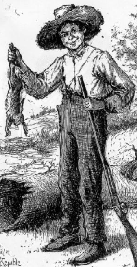

Chapter I Chapter I
Chapter III
Chapter IV
Chapter VIII
|

Huck's tale is rich with references to beliefs that he and Jim share. Because the reader doesn't know Huck, "without you have read a book by the name of The Adventures of Tom Sawyer; " the first chapters are an introduction not only to the story, but to its hero. Getting to know Huck involves getting to know his beliefs and from the early chapters learn about his musings on God, spirits, and luck.
Below are several chapters of The Adventures of Huckleberry Finn in which Huck's beliefs figure significantly. Important passages are highlighted, some with links to the list of superstitions compiled for this site.
|
Chapter I
Chapter III
Chapter IV
Chapter VIII
|